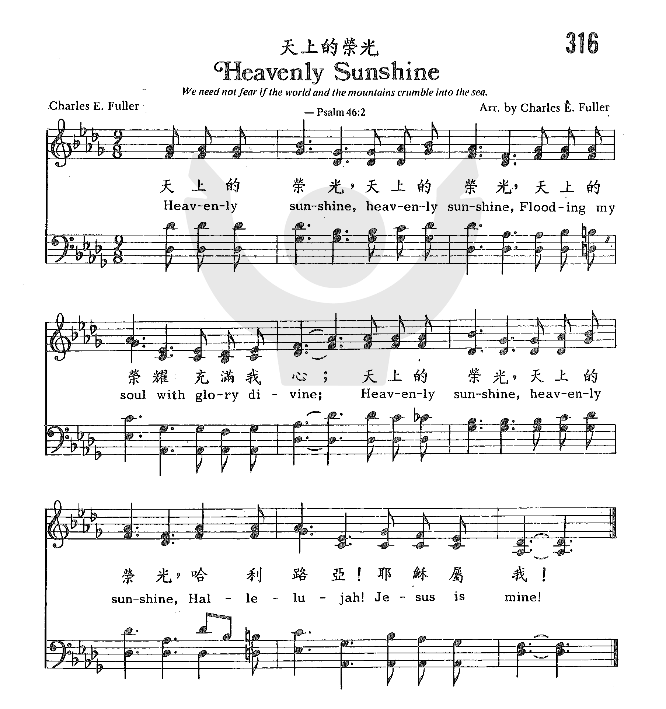

|
|
|
|
1 Walking in sunlight, all of my journey, Refrain: 2 Shadows around me, shadows above me, 3 In the bright sunlight, ever rejoicing, |
1 在我旅途中，荣光在前引， (副) 天上的荣光，天上的荣光， 2 阴影笼罩我，四面围困我， 3 荣耀明光中，欢乐真无穷，
|
|
https://www.zanmeishige.com/tab/25684.html?songbook=1&index=316

|
|
|
|
|

https://youtu.be/J2XmT4iFegU https://youtu.be/ggL8nkLlwoE -
Heavenly Sunlight - A Cappella Hymn https://youtu.be/Cli6HyFWGIE
0992
Heavenly Sunshine 天上的荣光
| Text: | Heavenly Sunlight |
| Author: | H. J. Zelley |
| Tune: | SUNLIGHT |
| Composer: | George Harrison Cook |
| Short Name: | Henry J. Zelley |
| Full Name: | Zelley, Henry J. (Henry Jeffreys), 1859-1942 |
| Birth Year: | 1859 |
| Death Year: | 1942 |
Henry Jeffreys Zelley was born at Mt. Holly, NJ, on Mar. 15, 1859. Educated in the Mt. Holly public schools, at Pennington Seminary, and at Taylor University, where he earned his M. A., Ph. D., and D. D. degrees, he became a Methodist minister in 1882 and first served in the New Jersey Conference as a statistical secretary, treasurer, and trustee, becoming a promoter of the campmeeting movement.
Noted for his evangelistic fervor, Zelley produced over 1500 poems, hymns, and gospel songs. One of his songs, "He Brought Me Out" with music by Henry L. Gilmour, appears in several denominational hymnals. Cyberhymnal also lists "When Israel Out of Bondage Came" or "He Rolled the Sea Away" with music by Gilmour too. Another of Zelley’s songs, "The Mountains of Faith" with music by M. L. McPhail, is found in Sacred Selections. After working with nineteen different churches in the New Jersey Conference over his lifetime, Zelley, who also served as a trustee of Pennington Seminary, retired in 1929 and died at Trenton, NJ, on Mar. 16, 1942.
--http://homeschoolblogger.com/hymnstudies
Tune Information
| Title: | SUNLIGHT |
| Composer: | George Harrison Cook (1899) |
| Meter: | 10.9.10.9 D |
| Incipit: | 56711 32125 56531 |
| Key: | G Major |
| Copyright: | Public Domain |
| Short Name: | George Harrison Cook |
| Full Name: | Cook, George Harrison, ?-1948 |
| Death Year: | 1948 |
Rv George Harrison Cook USA 1864-1948. Not much is known about him. Converted at age 14, Cook was a preacher, singer, composer and involved with church music. He wrote the tune “Sunlight” and asked his friend, Harry Zelley, to write words for it, which he did, in 1899. He died in Ocean Grove, NJ.
John Perry
"HEAVENLY SUNLIGHT"
"…I am the light of the world: he that followeth Me shall not walk in darkness…" (Jn.
8.12)
INTRO.:
A familiar song which praises Jesus as the light of the world in whom we must walk to please God is "Heavenly Sunlight" (#19 in Hymns for Worship Revised and #577 in Sacred Selections for the Church). The text was written by Henry Jeffreys Zelley, who was born at Mt. Holly, NJ, on Mar. 15, 1859. Educated in the Mt. Holly public schools, at Pennington Seminary, and at Taylor University, where he earned his M. A., Ph. D., and D. D. degrees, he became a Methodist minister in 1882 and first served in the New Jersey Conference as a statistical secretary, treasurer, and trustee, becoming a promoter of the campmeeting movement.
The tune (Sunlight) for "Heavenly Sunlight" was composed by George Harrison Cook (1864-1946 or 1948). Little is known about the composer. Coverted at age fourteen, he spent his life in the ministry of preaching, composing, and song training. Toward the end of his life, he was living at Ocean Grove, NJ. Around 1899 Cook set down the music and brought it to Zelley, asking him to provide words for it. Zelly and Cook sold the song to Henry Lake Gilmour (1836-1920). Gilmour copyrighted it and included it in his 1899 Gospel Praises, published by Hall-Mack at Philadelphia, PA, in association with William James Kirkpatrick (1838-1921).
Noted for his evangelistic fervor, Zelley produced over 1500 poems, hymns, and gospel songs. One of his songs, "He Brought Me Out" with music by Henry L. Gilmour, appears in several denominational hymnals. Cyberhymnal also lists "When Israel Out of Bondage Came" or "He Rolled the Sea Away" with music by Gilmour too. Another of Zelley’s songs, "The Mountains of Faith" with music by M. L. McPhail, is found in Sacred Selections. After working with nineteen different churches in the New Jersey Conference over his lifetime, Zelley, who also served as a trustee of Pennington Seminary, retired in 1929 and died at Trenton, NJ, on Mar. 16, 1942.
Among hymnbooks published by members of the Lord’s church during the twentieth
century for use in churches of Christ, this song has been included in just about
all of them. It appeared in the 1937 Great
Songs of the Church No. 2 edited by E. L. Jorgenson; the 1935 Christian
Hymns (No. 1), the 1948 Christian
Hymns No. 2, and the 1966 Christian
Hymns No. 3 all edited by L. O. Sanderson; and the 1963 Christian
Hymnal edited by J. Nelson Slater. Today it is found in the
1971 Songs
of the Church, the 1990 Songs
of the Church 21st C. Ed., and the 1994 Songs
of Faith and Praise all edited by Alton H. Howard; the
1978/1983 (Church)
Gospel Songs and Hymns edited by V. E. Howard; the 1986 Great
Songs Revised edited by Forrest M. McCann; and the 1992 Praise
for the Lord edited by John P. Wiegand; as well as Hymns
for Worship, Sacred
Selections, and the 2007 Sacred Songs of the Church edited by
William D. Jeffcoat.
The song identifies several blessings that we have as
we walk in Jesus Christ as our light.
I. Stanza 1 talks about the promise of Jesus’s divine presence in His sunlight
"Walking in sunlight all of my journey, Over the mountains, through the deep
vail,
Jesus has said, ‘I’ll never forsake thee,’ Promise divine that never can fail."
A. God wants us to walk in the light: 1 Jn. 1.5-7
B. As we walk in the light, Christ has promised to be with us wherever we go:
Matt. 28.28
C. This is one of the exceedingly great and precious promises that the Lord
makes us: 2 Pet. 1.3-4
II. Stanza 2 talks about the guidance that we receive from Jesus as we walk with
Him
"Shadows around me, shadows above me, Never conceal my Savior and Guide.
He is the light; in Him is no darkness. Ever I’m walking close to His side."
A. One reason that Jesus came to earth was to be our guide through life to
heaven: Ps. 48.14
B. If we follow Him who is the light, we shall never walk in darkness: 1 Thess.
5.4-5
C. But we must always remember to walk close to His side, ever drawing nearer
to Him: Jas. 4.8
III. Stanza 3 talks about the joy that we have from walking in the heavenly
sunlight of Jesus
"In the bright sunlight, ever rejoicing, Pressing my way to mansions above,
Singing His praises, gladly I’m walking, Walking in sunlight, sunlight of love."
A. Jesus offers great joy to those who follow Him: Jn. 16.20-24
B. This joy is the result of the fact that we are pressing our way to mansions
above: Phil. 3.13-14
C. And the sunlight that brings us this joy is the love of Christ: Eph. 5.1-2
CONCL.:
The chorus expresses anew this joy.
"Heavenly sunlight, heavenly sunlight, Flooding my soul with glory divine;
Hallelujah, I am rejoicing, Singing His praises, Jesus is mine."
Why would anyone choose to walk in the darkness of this sinful world when Jesus
Christ is the light of the world? If we wish to have the hope of heaven, we must
walk in Christ, and those who walk in Christ will have hearts filled with praise
for His "Heavenly Sunlight."
https://hymnstudiesblog.wordpress.com/2008/06/16/quotheavenly-sunlightquot/